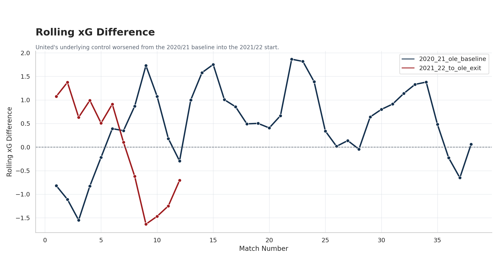
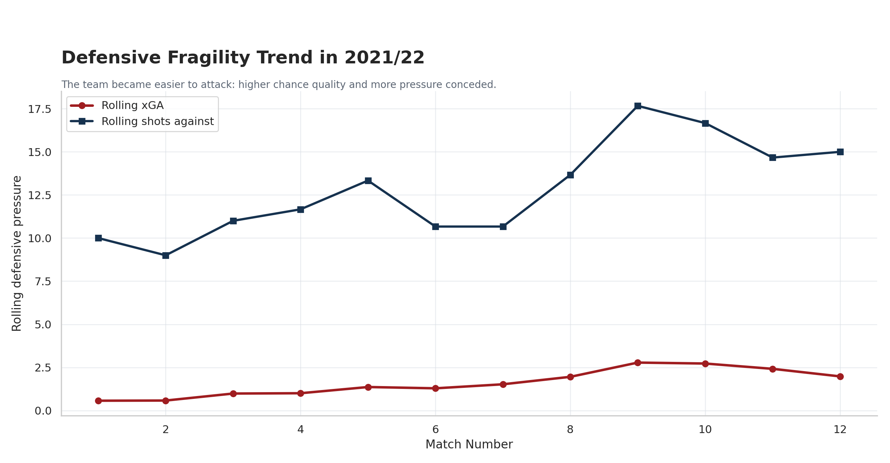
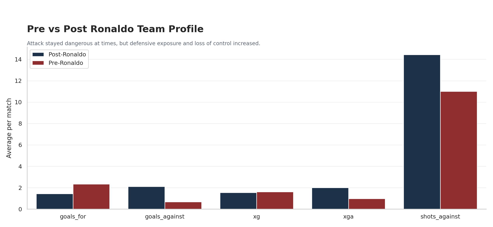
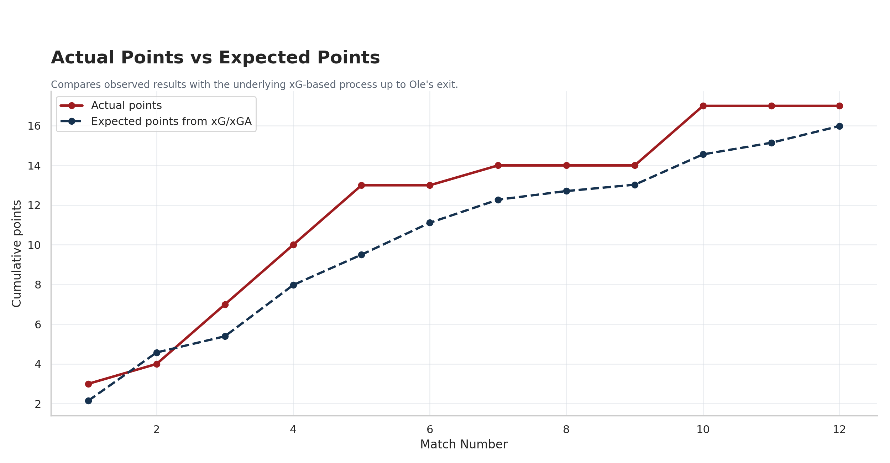
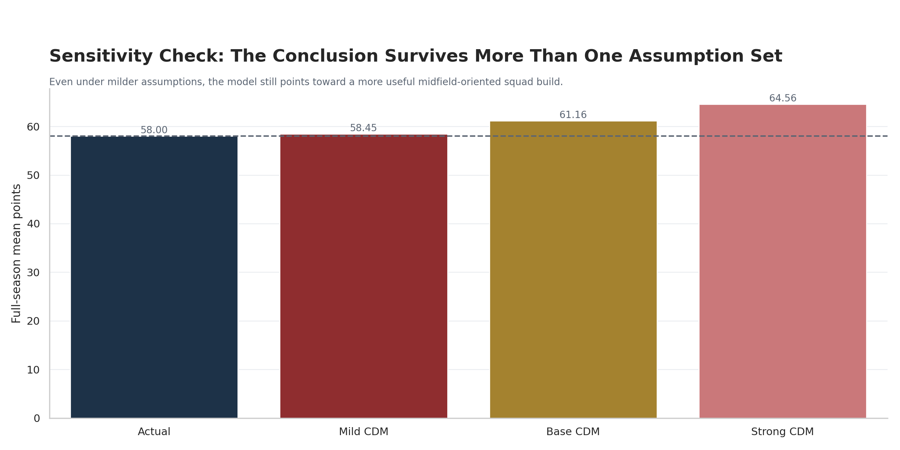

Manchester United Solved the Wrong Problem in 2021
A match-level counterfactual built on real public data suggests that replacing Cristiano Ronaldo with a control-oriented midfielder would probably have improved Manchester United, but only within the limits of a team that was already deteriorating.
The most revealing thing about Manchester United's 2021 summer is not that they signed Cristiano Ronaldo. It is what the signing implied about how they understood their own weakness.
Ronaldo was a glamorous answer: goals, aura, history, and instant emotional payoff. If the problem was a shortage of ruthlessness, the move almost explained itself.
But high-profile decisions are not always high-quality decisions. The strategic question is whether United used an elite resource on the capability they most urgently lacked.
This project tests that question through a disciplined counterfactual. What if United had not signed Ronaldo in summer 2021 and had instead added a control-oriented defensive midfielder? Not a magical fix. Just a more structurally useful player profile for a team that increasingly looked unstable without the ball.
First, Show The Drop-Off
If a counterfactual is going to be persuasive, the decline has to be visible before the model arrives. So the first question is not about Ronaldo at all. It is whether United's team profile actually worsened from 2020/21 into 2021/22.
It did. The points drop is obvious, but the underlying process worsened too. The team became less stable, conceded more danger, and lost the positive xG margin that supported the previous season. That points to a structural problem, not merely a spell of bad finishing luck.
| Season Window | Matches | Points | Points / Match | xG / Match | xGA / Match | xG Diff / Match | Shots Against / Match | xPts |
|---|---|---|---|---|---|---|---|---|
| 2020/21 baseline | 38 | 74 | 1.95 | 1.66 | 1.10 | +0.56 | 11.37 | 64.18 |
| 2021/22 to Ole exit | 12 | 17 | 1.42 | 1.56 | 1.76 | -0.20 | 13.58 | 15.98 |
| 2021/22 full season | 38 | 58 | 1.53 | 1.51 | 1.50 | +0.01 | 13.47 | 54.51 |




That is the key setup. Once the decline is visible on its own terms, the counterfactual becomes more grounded. The question shifts from fantasy to fit: if the problem was loss of control, would a different type of signing have addressed it more effectively than another elite attacker?
Why This Looks More Like A Control Problem Than A Finishing Problem
United did not simply need more goals. They needed more stability. That distinction matters because different transfer choices solve different types of problems.
Ronaldo solves a visible problem. He offers finishing, profile, and game-winning moments. A strong defensive midfielder solves a less glamorous but more structural problem: reducing the cost of losing midfield control.
The pre- and post-Ronaldo split is not perfect evidence, but it helps show why the squad question matters. After Ronaldo's arrival, attacking output did not vanish. What became more obvious was the fragility underneath it.
| Period | Matches | Points | Goals For | Goals Against | xG | xGA | Shots Against | xPts |
|---|---|---|---|---|---|---|---|---|
| Pre-Ronaldo | 3 | 7 | 2.33 | 0.67 | 1.62 | 0.98 | 11.00 | 5.39 |
| Post-Ronaldo | 9 | 10 | 1.44 | 2.11 | 1.54 | 2.01 | 14.44 | 10.59 |


What I Actually Modeled
Data and Model
I used real public match-level Premier League data for Manchester United's 2020/21 season, the 2021/22 stretch up to Ole Gunnar Solskjaer's exit, and the full 2021/22 campaign. The core variables were goals, xG, xGA, shots for, and shots against. I then simulated match outcomes with a Poisson goal model to estimate win, draw, and loss probabilities under alternative team profiles.
Counterfactual Logic
- Without Ronaldo, attacking output falls slightly.
- A defensive midfielder improves defensive stability and shot suppression.
- The generic CDM scenario is the main case.
- The Casemiro scenario is a secondary upper-bound illustration, not the primary causal claim.
The "generic CDM" is not meant to be a mystery player. It stands for a real capability type that was on the market in summer 2021. Manuel Locatelli and Boubakary Soumare are useful anchors for that profile, even though the simulation itself remains team-level rather than player-specific.
| Assumption | Value | Interpretation |
|---|---|---|
| attack_xg_multiplier | 0.94 | Slight reduction in attacking output without Ronaldo |
| control_xg_bonus | 0.05 | Small control-driven attack compensation from better midfield balance |
| defensive_xga_multiplier | 0.86 | Generic CDM improves defensive stability |
| defensive_shots_against_multiplier | 0.90 | Counterfactual team concedes fewer shots overall |
| shot_suppression_xga_bonus | 0.012 | Extra xGA reduction tied to controlling volume |
| casemiro_defensive_xga_multiplier | 0.82 | Stronger defensive effect in the named Casemiro scenario |
| casemiro_control_xg_bonus | 0.07 | Slightly larger control bonus in possession |
This is not an all-knowing football oracle. It is a transparent scenario model. Its value lies in clear assumptions and disciplined comparison, not in pretending to deliver certainty.
The multiplier values are judgment-based scenario bands, not empirically estimated coefficients. The base case represents a strong first-team solution that slightly reduces attacking edge without Ronaldo but meaningfully improves defensive protection and midfield balance. The mild and strong cases test how dependent the conclusion is on softer or firmer versions of that same football idea.
Ole's Exit Horizon: A Better Midfield Fit Helps Early
The first horizon is Solskjaer's exit in November 2021. That matters because it lets us ask whether a different squad build might have changed the trajectory before the season fully unspooled.
Here the effect is positive but not explosive. United took 17 actual league points in the Ole window. The generic CDM scenario raises that to about 18.1 simulated points. The stronger Casemiro-style case lifts the mean to about 19.2 points.
| Scenario | Mean Points | Median | 10th Percentile | 90th Percentile | Interpretation |
|---|---|---|---|---|---|
| Actual profile simulation | 16.02 | 16 | 11 | 21 | The model's baseline read of the observed team |
| Generic elite CDM | 18.13 | 18 | 13 | 23 | Main counterfactual case |
| Casemiro-style scenario | 19.21 | 19 | 14 | 24 | Upper-bound named case |

Full Season: Helpful, Plausible, Still Not Transformational
Across the full league season, United actually finished on 58 points. The generic CDM scenario raises that to about 61.2 points. That is meaningful, but it is not a totally different season. It suggests the team likely improves with more control, but not enough to escape the broader institutional weakness around it.
The Casemiro-specific scenario is more aggressive. That version raises the mean to roughly 64.5 points. It is also the one that deserves the most caution. Casemiro works best as a named upper-bound case, not as the article's main proof.
| Scenario | Observed / Mean Points | Delta vs Actual | Reading |
|---|---|---|---|
| Actual 2021/22 season | 58.0 | - | Observed outcome |
| Generic elite CDM | 61.16 | +3.16 | Meaningful uplift, but not a transformation |
| Casemiro-style scenario | 64.47 | +6.47 | Stronger upside under a better-fit midfield addition |


Does The Conclusion Depend On One Convenient Assumption Set?
That is the obvious challenge to any counterfactual model, and it is a fair one. So I tested the generic CDM case under a mild, base, and strong set of assumptions rather than relying on one exact multiplier choice.
The full-season result still leans in the same direction across all three versions. The mild case only lifts United to about 58.5 points, barely above the actual season. The base case lands at about 61.2, and the strong case rises to about 64.6. The exact magnitude is assumption-sensitive, but the broader story survives.
| Sensitivity Case | Mean Points | Delta vs Actual | Interpretation |
|---|---|---|---|
| Observed actual | 58.00 | 0.00 | What actually happened |
| Mild generic CDM | 58.45 | +0.45 | Very limited uplift under conservative assumptions |
| Base generic CDM | 61.16 | +3.16 | Main scenario used throughout the article |
| Strong generic CDM | 64.56 | +6.56 | Upper-end but still directionally plausible case |

Why The Casemiro Version Works Best As A Secondary Case
Casemiro is useful because United eventually bought this exact type of player in 2022. That makes him a powerful historical anchor. But it also makes him potentially misleading if he becomes the whole article. The stronger the named-player case becomes, the more the piece risks turning into hindsight fan fiction.
That is why the generic CDM should remain the core argument. It is the cleaner strategy claim. The Casemiro case then becomes the sharper secondary takeaway: if the fit had been unusually strong, the gains may have been meaningfully larger than the baseline counterfactual suggests.
| Scenario | Ole Exit Mean Points | Full Season Mean Points | Interpretation |
|---|---|---|---|
| Actual observed season | 17.0 | 58.0 | What actually happened |
| Generic elite CDM | 18.13 | 61.16 | Main counterfactual case |
| Casemiro-style scenario | 19.21 | 64.47 | Secondary upper-bound named case |
What This Does Not Prove
This model does not prove that Ronaldo caused United's decline. It does not prove that Casemiro would definitely have delivered 64 or 65 points. It does not prove that one better transfer would have solved the whole institution.
What it does show is narrower and, in some ways, more useful. It shows that once you model United as a team that needed more control and protection rather than more star finishing, the results improve in a plausible way. That is enough to support a serious strategic conclusion.
So What Should The Reader Believe?
The reader should not come away believing that Ronaldo ruined Ole. That is too simple and the model does not support it. The better conclusion is that Manchester United likely invested in the most visible solution rather than the most structurally useful one.
The generic CDM scenario says the improvement was real but limited. The Casemiro scenario says that a much better fit in midfield could have made a larger difference. Together, those results point to the same core idea: United probably solved the wrong problem in 2021, but they were also an institution with deeper problems than one transfer could fix.